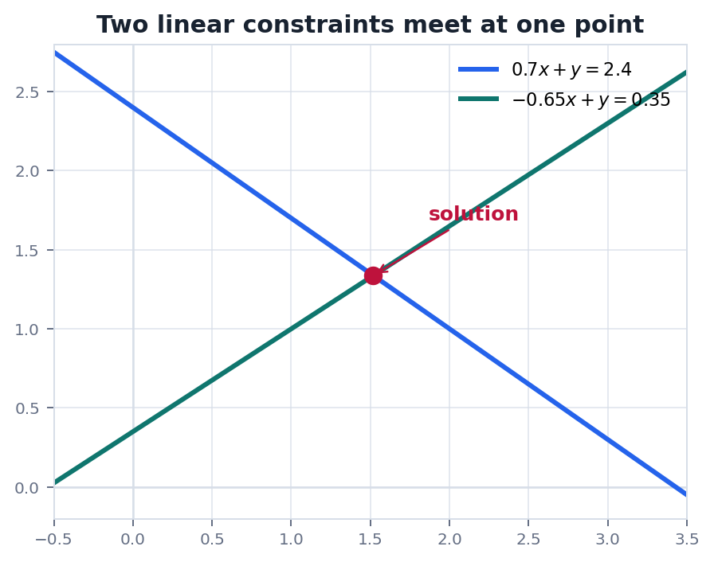
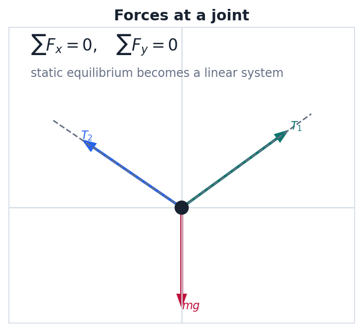

Route
0. 全章主线
先把方程组看成约束, 再把消元看成保持解集不变的整理过程.
真实问题多个条件同时成立.
方程组把条件写成线性等式.
增广矩阵只保留系数和常数项.
行变换保持解集不变地整理约束.
读解从阶梯形判断解的个数.
本章核心消元法不是技巧表演, 它是在不改变解集的前提下, 把一组复杂约束改写成更透明的约束.
Problem
1. 线性方程组先代表什么
每一条线性方程都是一个限制条件, 解就是所有限制同时满足的位置.
二元方程 $a x+b y=c$ 在平面中是一条直线. 三元方程 $a x+b y+c z=d$ 在空间中是一个平面. 多个方程放在一起, 就是在问这些直线或平面有没有公共交集.
$$
\begin{cases}
a_{11}x_1+a_{12}x_2+\cdots+a_{1n}x_n=b_1\\
a_{21}x_1+a_{22}x_2+\cdots+a_{2n}x_n=b_2\\
\cdots\\
a_{m1}x_1+a_{m2}x_2+\cdots+a_{mn}x_n=b_m
\end{cases}
$$
唯一解约束刚好交于一个点.
无解约束彼此冲突, 没有公共位置.
无穷多解约束有冗余, 公共交集是一条线, 一个平面或更高维对象.
Algebra
2. 增广矩阵与初等行变换
增广矩阵把方程组压缩成数字表, 行变换对应对方程做等价改写.
把未知数按固定顺序排好, 方程组就可以写成 $Ax=b$. 计算时常把系数矩阵和右端向量放在一起:
$$
\left[
\begin{array}{cccc|c}
a_{11}&a_{12}&\cdots&a_{1n}&b_1\\
a_{21}&a_{22}&\cdots&a_{2n}&b_2\\
\vdots&\vdots&&\vdots&\vdots\\
a_{m1}&a_{m2}&\cdots&a_{mn}&b_m
\end{array}
\right]
$$
| 行操作 | 方程视角 | 为什么可用 |
|---|---|---|
| 交换两行 | 交换两条方程顺序 | 约束集合没有变化 |
| 某行乘非零数 | 等式两边同乘非零数 | 同一条约束的等价写法 |
| 一行加另一行的倍数 | 用约束的线性组合替换约束 | 新旧方程组互相推出 |
边界初等行变换保持解集不变. 初学阶段不要随意做列变换, 因为列变换会改变未知量的含义.
Elimination
3. 高斯消元怎样读解
消元的目标是得到阶梯形, 让主元, 自由变量和矛盾行一眼可见.
阶梯形矩阵里, 每个非零行最左侧的非零元素叫主元. 主元所在列对应主变量, 其他未知数通常是自由变量.
$$
\left[
\begin{array}{ccc|c}
1&2&-1&3\\
0&1&4&5\\
0&0&0&0
\end{array}
\right]
\Rightarrow
x_3=t,\quad x_2=5-4t,\quad x_1=-7+9t
$$
- 先找主元列, 判断哪些变量被约束住.
- 再看是否出现 $0=非零数$ 的矛盾行.
- 若没有矛盾行, 用自由变量参数化全部解.
常见误区出现一整行零不代表无解, 它通常表示这条方程是冗余约束. 真正的无解信号是 $[0\ 0\ \cdots\ 0\ |\ c]$ 且 $c\ne0$.
Geometry
4. 几何图像: 交点就是解
图像能帮助我们理解解的个数, 也能提醒代数运算背后是什么对象.


如果两条直线平行且不同, 方程组无解. 如果两条直线重合, 方程组有无穷多解. 在三维中, 同样的逻辑会变成平面之间的相交, 平行和重合.
Physics
5. 物理问题: 受力平衡就是线性约束
静力平衡给出本章最自然的物理模型: 总力为零.
问题一个重物挂在两根斜绳连接的结点上. 若结点保持静止, 两根绳子的张力 $T_1,T_2$ 必须让水平和竖直方向的合力都为零.
$$
\begin{cases}
T_1\cos\alpha - T_2\cos\beta = 0\\
T_1\sin\alpha + T_2\sin\beta = mg
\end{cases}
$$
这不是把物理问题"套公式", 而是把守恒或平衡规律翻译成线性约束. 当结构里有更多结点和杆件时, 方程数量会增加, 但核心仍是 $Ax=b$.
Checklist
6. 实战清单与易错点
做方程组题时, 先判断结构, 再计算, 最后回到原问题解释.
实战清单
- 未知量顺序是否固定?
- 每行代表哪条约束?
- 行变换是否只对方程做等价改写?
- 主元列和自由变量是否读全?
- 结论能否解释原问题?
高频错误
- 把列变换当成普通消元步骤.
- 无穷多解时漏写参数.
- 看到零行就判断无解.
- 回代时把主变量和自由变量混掉.
记住线性方程组的本质是约束系统. 消元法的本质是把约束改写到更容易读解的形态.